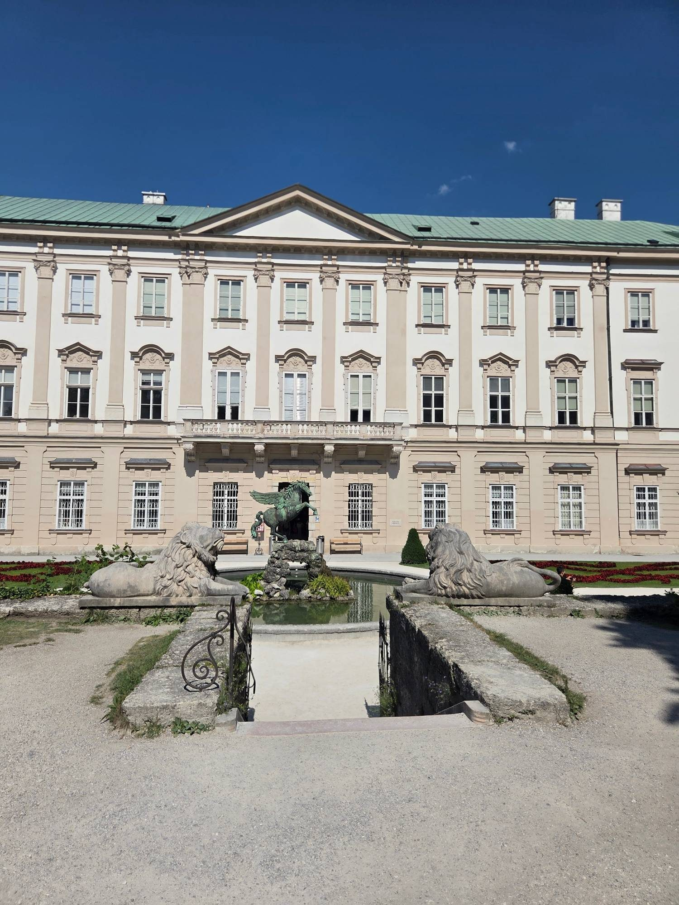
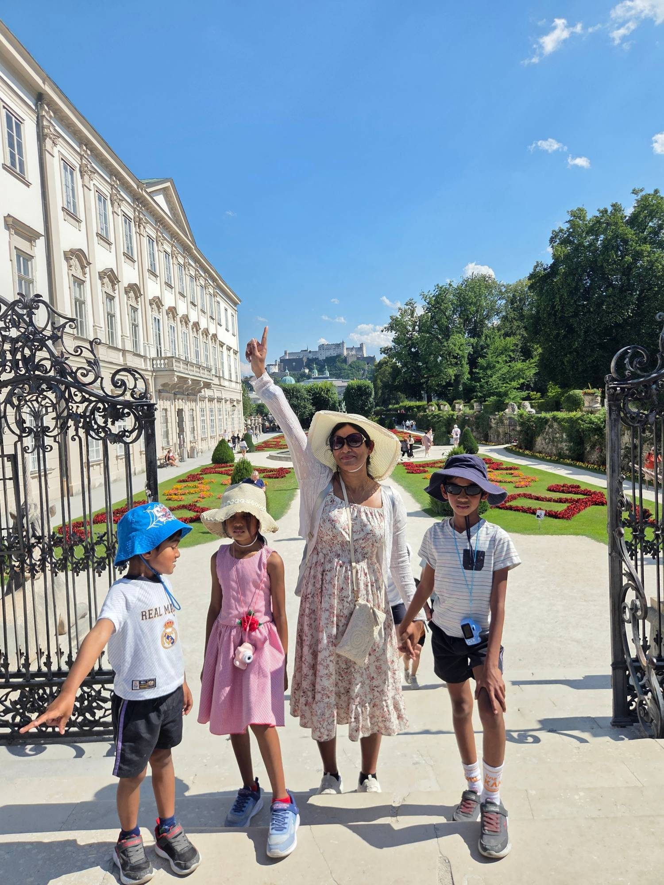
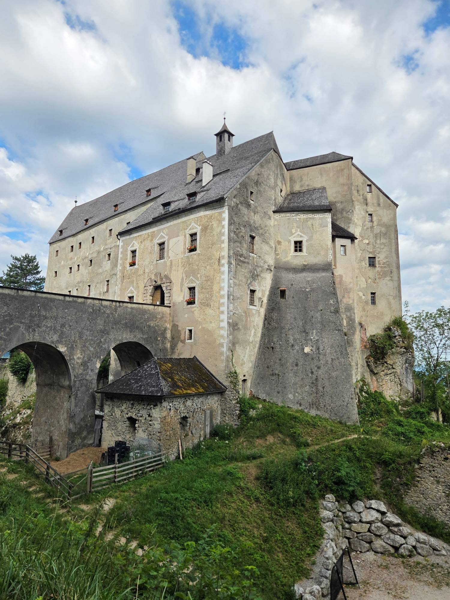
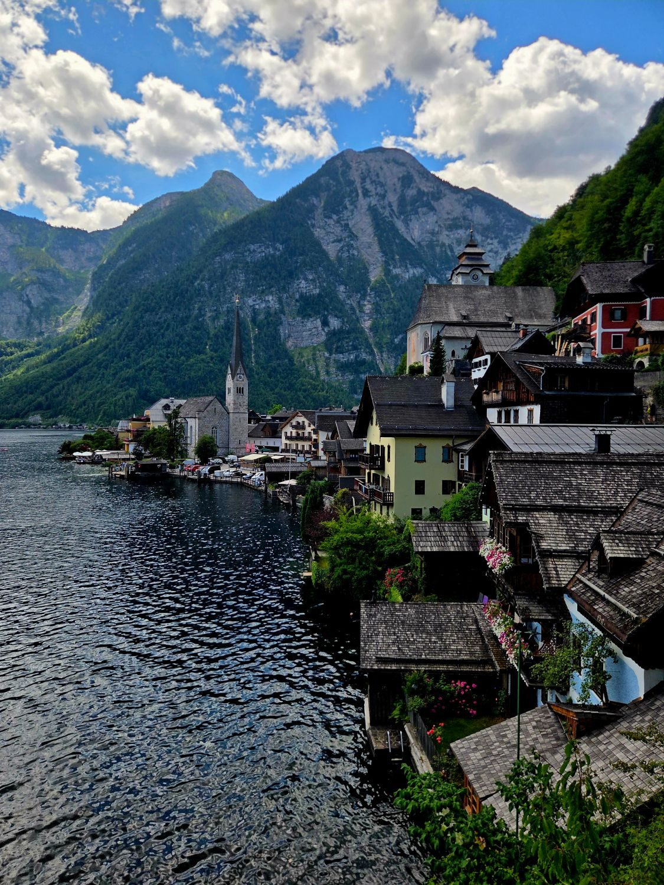
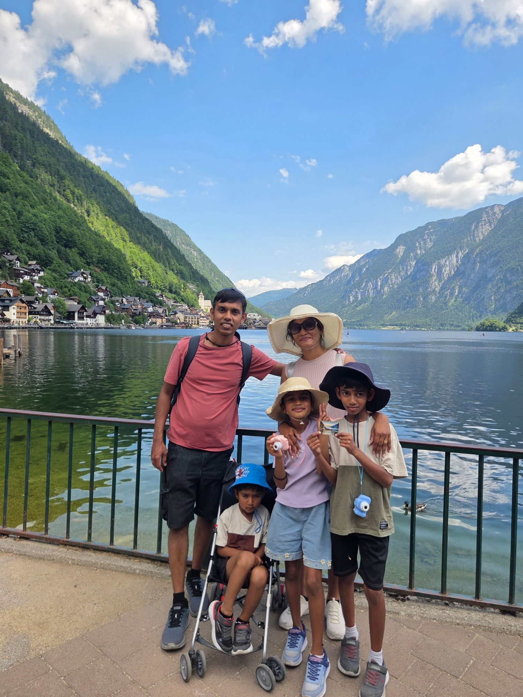
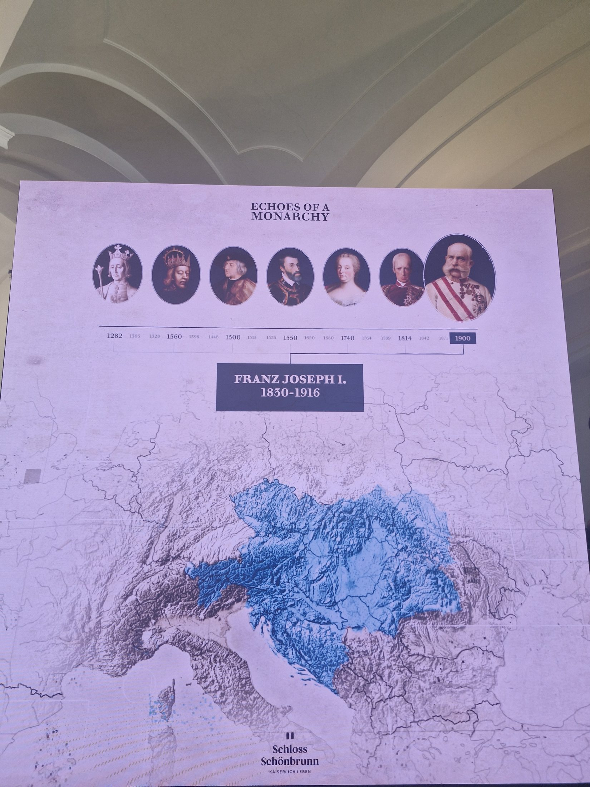
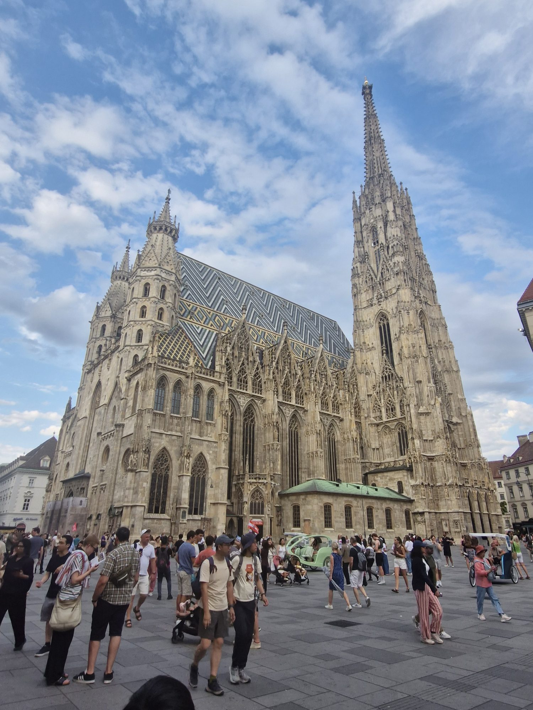
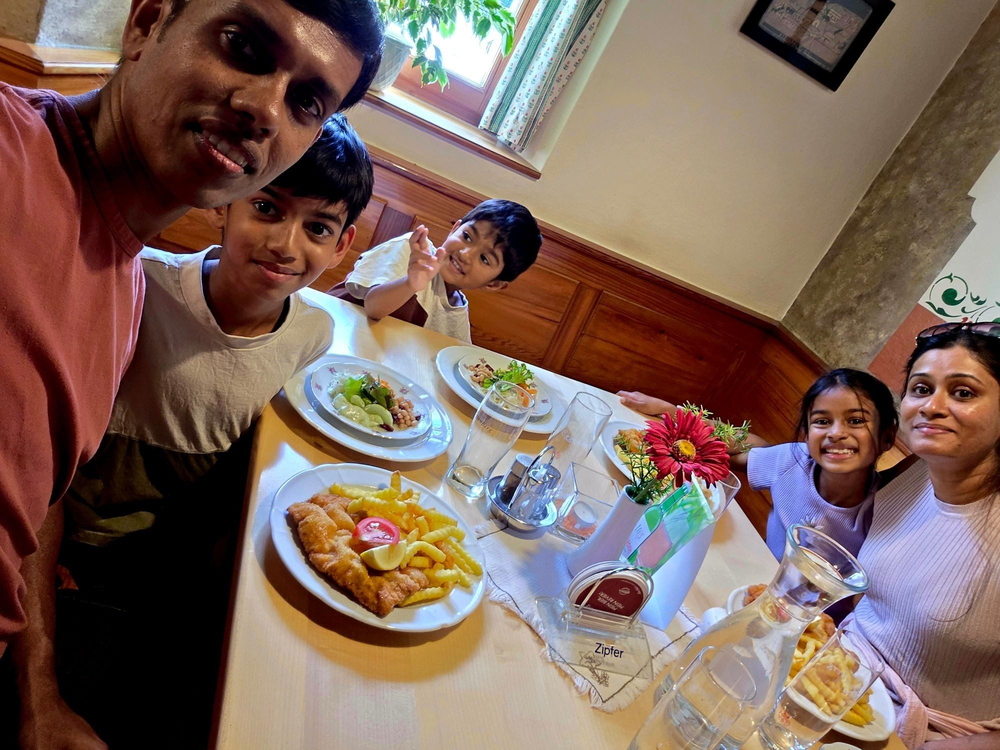

In one country we saw three radically different Austrias. Hallstatt was the oldest — a lakeside village whose salt mines named an entire Iron Age culture. Salzburg was the most musical — where a four-year-old Mozart began composing in a yellow townhouse off Getreidegasse. Vienna was the most imperial — where six hundred years of Habsburg power left palaces in every direction.
These three cities are bound by mountains, by lakes, by the Danube and the Salzach, and — quietly, in the way Austria does these things — by classical music piped from every café terrace.
This issue is about what happens when one small country gives you a salt mine, a Sound of Music tour, a Mozart concert, and an emperor's palace, all within four hundred kilometres of each other.
— The Munasinghes, 2026
The story so far: we began in Beijing, where the Great Wall and the Forbidden City gave the children their first taste of how old and how vast the world can be — before a red-eye flight carried us west into Europe and a jet-lagged first afternoon in Munich.
Now the road climbs into the Alps. Austria is our second chapter — a small country of salt mines and lake villages, of Mozart's Salzburg and the Habsburgs' Vienna, with the Sound of Music hills waiting at the door. This page rides at the front of every issue: where we've been, where we are, and where we're headed next.

The Sound of Music was one of my favourite films as a child. When I was six or seven, my sister and I would act it out for hours — I was always Maria, she was Liesl, and a row of dolls stood in for the rest of the von Trapp children. I knew every song. I must have watched that film more than a hundred times, and every single time, in my mind, I was already here — already in Austria. To stand in the real Salzburg now, decades later, with a husband beside me and three children of my own, was a dream far beyond anything that little girl ever dared to dream.
It was noon by the time we reached the city, and after Beijing, a red-eye flight and a morning in Munich, we arrived with tired legs — Aviann most of all. So we did Salzburg gently. We walked into the Mirabell Gardens, the very place where Maria and the children skipped and sang "Do-Re-Mi". And there, among the flowerbeds and fountains with the fortress watching from its hill, I did the things I had only ever pretended: the little splash at the fountain, and standing before the garden gate — the moves I had copied as a girl a hundred times over. Thirty years of dreaming, and this time the gate was real, the water was real, and my own children were the ones watching.
There was no time for more. We never climbed to the Hohensalzburg Fortress on its hill — we only saw it from below — and Mozart's birthplace stayed a doorway we passed without stopping. We were already running two hours behind, with a church to reach before the day was gone. So we wandered what streets we could, bought ice-cream for three weary children, and let that be enough. Not a checklist — a stolen hour in the one place I had waited my whole life to see, before we hurried on.

This is the gate. The very steps where the children line up in the last verse of "Do-Re-Mi", with the fortress crowning the hill behind. I had stood here a hundred times in my imagination; now I stood here with three children of my own, pointing up at the same fortress on the same hill, and telling them the story for real.
We never climbed to the Hohensalzburg itself — there was no time, and tired legs, and a church to reach. But we didn't need to. To see it from here, from the garden gate, with my family beside me, was the whole dream in a single frame.

Mass finished at a quarter to eight, and we stepped out into a problem we hadn't seen coming. It was Saturday, and in Austria the shops close at six — so our plan to pick up groceries for dinner had quietly expired two hours earlier, while we were still in the pews. A tired family, three hungry children, and a town that had rolled up its shutters for the weekend.
We found a restaurant just before it, too, closed for the night, and ordered pizza and pasta almost at the door. It cost more than the supermarket dinner we had planned — an unexpected dent in the day's budget — but it was hot, it was food, and after the day we'd had, nobody was complaining.
Then, at last, the castle. We were staying at Burg Altpernstein, a genuine hilltop fortress — and a genuine fortress, it turns out, has no elevator. We hauled our heavy bags up to the third floor by stair, breath by breath, and we couldn't even mind: you don't keep a castle's medieval soul by drilling a lift shaft through it. A hot bath washed the long day away, and we fell into bed more tired than we had been at any point on this trip. Day one in Austria, done.

We woke at five o'clock — all of us, even the children, and for once wide awake and bright. The hot bath the night before had done its quiet work, and the exhaustion of the long journey had finally lifted. We were at the breakfast buffet by a quarter past seven, fifteen minutes before it opened, and when it did we fell on it happily: cheese and ham, salads and dips, fruit juice and cereal, more than we could finish. Full and ready, we drove out to Hallstatt.
We reached the village around half past ten, early enough that the fierce midday heat had not yet arrived. Hallstatt is astonishing — pastel houses stacked up a cliff above an emerald lake, the whole scene doubling in the still water. It is also, we quickly discovered, one of the most crowded small places on earth: the narrow lanes ran shoulder to shoulder with visitors. The mountain, sadly, was against us that day — both the famous salt mine, the oldest in the world, and the Skywalk viewpoint above it were closed. We made one more skip by choice: the Bone House, the little chapel of painted skulls, felt a step too far for a four-year-old, so we spared Avin the crypt. We let those go and took the village on its own gentler terms.
Instead, we walked. We wandered the lanes and the waterfront, and took a boat out onto the Hallstättersee — which turns out to be the finest way to see the village at all: from the water, in slow zoom, the mountains climbing behind it. We never ate in Hallstatt itself — that enormous breakfast stayed with us all day — but on the drive back we finally tried the dish Austria is famous for: a proper Wiener Schnitzel, golden and thin and bigger than the plate. Not the day we had planned, but a good one all the same — morning-cool, lake-bright, and impossibly pretty. Then it was back up the hill to the castle, a hot bath, and bed — the second day folded away as gently as the first.

By mid-morning the lanes ran shoulder to shoulder — Hallstatt is tiny, and half the world seemed to have come to photograph it at once. We joined them happily, wandering the waterfront and the market square with its Trinity column, and then did the one thing that beats any viewpoint: we took a boat out onto the Hallstättersee and watched the village pull slowly into frame from the water, the mountains climbing behind it.
Someone had a postcard of the same view under winter snow. We held it up against the summer lake — same church, same cliff, same impossible prettiness — and took a picture of the picture. Not the day we'd planned, with the salt mine shut. A better one.
You cannot understand Vienna without understanding the Habsburgs. From 1278 until 1918 — six hundred and forty years — this family ran an empire that at various points included Austria, Hungary, Bohemia, Croatia, parts of Italy, parts of Poland, all of the Holy Roman Empire, and (for a few decades) Spain and Mexico. They built like people who knew they would never leave. The Hofburg in central Vienna alone has 2,600 rooms. Schönbrunn, their summer palace, has 1,441.
We walked the Schönbrunn gardens in the afternoon heat, climbed the Gloriette for the view back over the city, and watched Avin chase butterflies through baroque parterres designed by Maria Theresa's personal gardener in 1750. In the evening we listened to a Mozart-and-Strauss concert in the Orangery. Avin fell asleep during Eine kleine Nachtmusik. We took it as the highest possible compliment to Mozart's craft.
The Great Gallery is the ceremonial heart of Schönbrunn: nearly forty-three metres long, walled in mirrors and gilded stucco, lit by great crystal chandeliers and roofed by an enormous ceiling fresco. This was Maria Theresa's room for the grandest occasions — state banquets, receptions, and balls that ran until dawn.
The ceiling was painted in 1760 by the Italian master Gregorio Guglielmi: a swirling allegory glorifying the reign — the crown lands, the arts and sciences, the good government of the monarchy. Its central panel was destroyed by a bomb in 1945 and painstakingly restored after the war.
History keeps passing through it. During the Congress of Vienna in 1814–15, the powers redrawing Europe waltzed in this gallery. And in June 1961 the room hosted the summit between John F. Kennedy and Nikita Khrushchev — the two superpowers, face to face, under Maria Theresa's ceiling.
Schönbrunn began as a hunting lodge, wrecked by the Turks and then rebuilt. It was Maria Theresa who turned it into the palace we walked today — a summer residence of some fourteen hundred rooms, its walls washed in the warm ochre that Austria still calls "Schönbrunn yellow." The gardens, the Gloriette on the hill, the menagerie that grew into the world's oldest zoo — all of it took shape under her.
The projection carried the family's whole story: the great receptions, the six-year-old Mozart who played here for the empress in 1762, and the darker turns as well.
That foreigner was Napoleon, who made Schönbrunn his headquarters twice, in 1805 and 1809, dictating peace to the Habsburgs from their own palace. In a final twist, his only legitimate son — the little "King of Rome," grandson of the Austrian emperor — grew up here and died in these rooms in 1832, at just twenty-one. The children watched it all move across the gold, wide-eyed.
When her father died in 1740 leaving no son, twenty-three-year-old Maria Theresa inherited an empire that half of Europe promptly tried to carve up. She fought them off through the long War of the Austrian Succession and held the lands together for four decades, reforming the army, the treasury and the schools as she went.
She married for love — Francis Stephen of Lorraine — and bore sixteen children in twenty years, marrying them across the continent to bind it by blood. The youngest daughter, Maria Antonia, went to France and became Marie Antoinette. Schönbrunn was the family's beloved summer home, and it is her taste, her yellow and her ceilings that fill it still.
Even telling the time was an occasion. This gilt-bronze mantel clock — all scrolls, flowers and tumbling putti — is pure eighteenth-century court rococo, built to dazzle as much as to keep the hour. Rooms like these held hundreds of such pieces: porcelain, ormolu, lacquer and mirror, a language of luxury spoken fluently only by the very rich.
The Habsburgs dined under a strict "Spanish court ceremonial," every plate and place governed by rank and ritual. Yet Maria Theresa also prized something rarer for royalty — ordinary family meals, the children at the table, warmth behind the pomp. These settings, crystal and porcelain on white damask, hold both the grandeur and the domesticity this house was known for.
In the summer of 1853, in the spa town of Bad Ischl, a twenty-three-year-old emperor was supposed to fall in love to order. Franz Joseph I already ruled the Habsburg empire, and his mother, the formidable Archduchess Sophie, had chosen his bride: her niece Helene of Bavaria, the sensible elder sister. But when the family arrived, Franz Joseph barely noticed Helene. His eye had gone straight to her younger sister — fifteen-year-old Elisabeth, whom everyone called Sisi. Within five days they were engaged.
They married in Vienna the following spring, and Sisi walked into the most rigid court in Europe. She was famous almost at once for her beauty — a tiny waist she guarded with fierce discipline, and hair so long it fell past her ankles and took her hairdresser three hours to arrange. But the gilded protocol of the Hofburg suffocated her. She escaped it constantly, travelling for months at a time — to Hungary, which she loved, to Corfu, to anywhere the court was not — and filled private notebooks with melancholy poems.
Yet Sisi was more than ornament. She loved Hungary above every other land of the empire, learned its language when almost no one at court would, and lent her influence to the Compromise of 1867 that made her husband King of Hungary as well as Emperor of Austria — and crowned her a queen in Budapest. It stayed the achievement she was proudest of.
Sorrow shadowed the fairy tale. In 1889 their only son, Crown Prince Rudolf, died at his hunting lodge at Mayerling, and Sisi wore mourning black for the rest of her life. Nine years later, on a Geneva quay in 1898, an anarchist stepped from a crowd and stabbed her with a sharpened file; she walked on a few steps before she fell. Franz Joseph reigned alone until 1916 — sixty-eight years in all — outliving his wife, his son, and very nearly his empire.
Everything about her became legend: the ankle-length hair washed with egg and cognac, the diamond stars pinned through it, the exercise rings fixed in her palace rooms, the notebooks of verse. A century on, the films turned her into a sugared sweetheart — "Sissi," with a double S — but the real Elisabeth was stranger, sadder and far more interesting than the girl on the screen.
The children listened with wide eyes. It is a strange thing to explain to a child: that the most admired woman in Europe, who lived in a golden palace of a thousand rooms, was for much of her life quietly unhappy.

In September 1529 the most powerful man in the world arrived at the gates of Vienna. He was Suleiman the Magnificent, sultan of the Ottoman Empire at the very height of its reach — a realm that ran from the walls of this city to the deserts of Arabia. Three years earlier his army had destroyed the kingdom of Hungary in a single afternoon at Mohács; now he had marched the better part of a thousand miles to take the Habsburg capital itself.
To understand why Vienna trembled, you have to go back to that marsh at Mohács. There, in August 1526, the Ottoman army had annihilated the kingdom of Hungary in under two hours; the young Hungarian king drowned as he fled the field, and a wealthy Christian kingdom simply ceased to exist. The road north lay open after that, and everyone in Vienna knew it.
Suleiman set out from Istanbul in May with a vast army and a great train of cannon, but the same wet spring that would later undo him slowed the march from the start. His light horsemen, the akıncı, swept ahead and put the countryside to the torch; frightened villagers crowded in behind the walls, and the defenders burned their own suburbs so the enemy would find no shelter near the city.
Inside stood a patchwork of the age — German pikemen, Spanish musketeers sent by the emperor's brother Charles V, Bohemian and Austrian troops — perhaps twenty thousand in all, thrown together under old Count Salm to hold a medieval wall against the most modern army on earth.
Vienna was badly outnumbered. The archduke, Ferdinand I, was elsewhere, and the city's defence fell to an elderly soldier, Count Niklas von Salm, with a garrison dwarfed by the host outside the walls. But the city had two allies the sultan could not defeat. The first was the weather — an unusually wet autumn that turned the roads to mud, stranded his heavy siege cannon somewhere back in the Balkans, and left the Ottoman army cold and hungry so far from home.
The second ally was time. The numbers were badly lopsided — the sultan's host several times the size of the garrison — and the fiercest fighting happened out of sight, underground. Ottoman sappers dug mines to blow breaches in the walls; the defenders dug down to meet them, listening for the scrape of spades in the dark and fighting hand to hand beneath the city. Count Salm was wounded in those last assaults, and would die of it the following spring.
By mid-October, with winter closing in and his supply lines failing, Suleiman broke off the siege and turned for home. He told the world it had never been a serious attempt — but he never took Vienna, then or later. A century and a half on, in 1683, a second and even greater Ottoman army stood before these same walls, and was broken by a thunderous charge of Polish and allied cavalry down from the Kahlenberg hills. Twice the tide of empire reached this city; twice it went out again. Everything gilded and imperial that we saw today was built, in the end, behind a line that held.

St. Stephen's — Stephansdom — is Vienna's soul in stone. A church was first consecrated on this spot in 1147, and the great Gothic cathedral rose over the centuries that followed. Its south tower, 136 metres tall, is affectionately nicknamed the "Steffl," and for generations it was the tallest thing for miles around.
The roof is its glory: nearly a quarter of a million glazed tiles laid in dazzling zig-zags, and on the south side the double-headed eagle of the empire picked out in colour — a coat of arms you can really only read from the sky.
Below lie the catacombs, where the bones of tens of thousands of Viennese still rest. The cathedral has survived siege, plague and the last terrible days of the Second World War, when fire gutted its roof in 1945. The Viennese rebuilt it — every province of Austria helping to pay — and it reopened, whole again, in 1952. We reached it as the crowds thinned and the stone went honey-gold, and simply stood in the square looking up.
You step out of the bright, busy square into a cool half-dark, and the ceiling simply climbs away from you — ribbed Gothic vaults vanishing into shadow, stone pillars like a forest of trunks, the long chequerboard floor drawing your eye to the far altar. After a whole day of gold built to impress you, this is a space built to make you feel small. It works. We stood there, all five of us, and none of us could speak.
Seven centuries of prayer are soaked into these walls. Somewhere in the gloom is the great stone pulpit carved around 1500, its rail crawling with lizards and toads; the delicate Wiener Neustädter altar with its folding wings of gilded saints; the vast red-marble tomb of Emperor Frederick III. In the side chapels the last evening light falls in coloured shafts through the stained glass and pools on the old stone. You don't really photograph a place like this — you just stand in it.
Somewhere on our Vienna evening the question crept up and refused to leave: which one do we love most — Prague, or Vienna? We still can't answer it, and we've decided that's the point.
Prague stole our breath like a fairy tale. It was the almost-empty Charles Bridge at eight in the morning, the Old Town that made us say out loud, "this looks like King's Landing," the golden spires and the un-photographable majesty of it, St. Vitus soaring over the castle, a tornado potato and a trdelník in a little park. A city you don't visit so much as walk into, like a story.
Vienna took our breath a grander way. Gold and mirrors at Schönbrunn, Maria Theresa's ceilings, the love story of Franz Joseph and his Sisi, six hundred years of empire laid out on the walls — and then a Gothic cathedral at dusk that left us without a single word. And it has the majesty that suits a palace, because Vienna was built to be a capital of emperors, and it knows it.
So we won't choose. Prague is beauty found — a thousand years that simply happen to take your breath away. Vienna is beauty commissioned — every gilded inch built on purpose to say an empire lived here. Loving them differently isn't indecision. It's just having a heart big enough for both.
Ask us again tomorrow and the answer will have moved. That is the quiet gift of a journey like this one: you don't come home with a single favourite — you come home with a heart full of them, and you carry them all at once.

The dish we had crossed half the world for arrived on the drive back from Hallstatt: a proper Wiener Schnitzel — veal pounded paper-thin, breaded and fried until the crust puffs into a golden cloud, dressed with nothing but a wedge of lemon and hanging clean over the edge of the plate, a heap of crinkle-cut fries beside it. Austria's national dish, eaten in a warm timber-panelled Gasthaus with a Zipfer coaster under the glass — exactly as it should be.
Most of what we ate in Austria wasn't in restaurants at all. The castle at Altpernstein laid out a breakfast buffet each morning — cheese and ham, salads and dips, juice and cereal — so generous it carried us clean through the day. In Salzburg we queued for ice-cream in the heat and ate it walking the Mirabell gardens. And on our very first night, with every shop shut at six, we slipped into a restaurant minutes before it closed for a plate of pizza and pasta that never tasted better. Not a gourmet tour — just the food a travelling family actually eats, and remembers.
Austria is small. You can drive its width in three hours. But it punches above its weight in cultural density: every single city we visited had a UNESCO World Heritage centre, every single café served a different cake on a porcelain plate, every single street corner had a busker playing something baroque on a violin.
What we will carry home: the smell of pine on the Hallstatt funicular, the silence inside the Salzburg Cathedral, the sound of Avin asking "is THIS a palace too?" outside every building taller than a tram stop in Vienna.